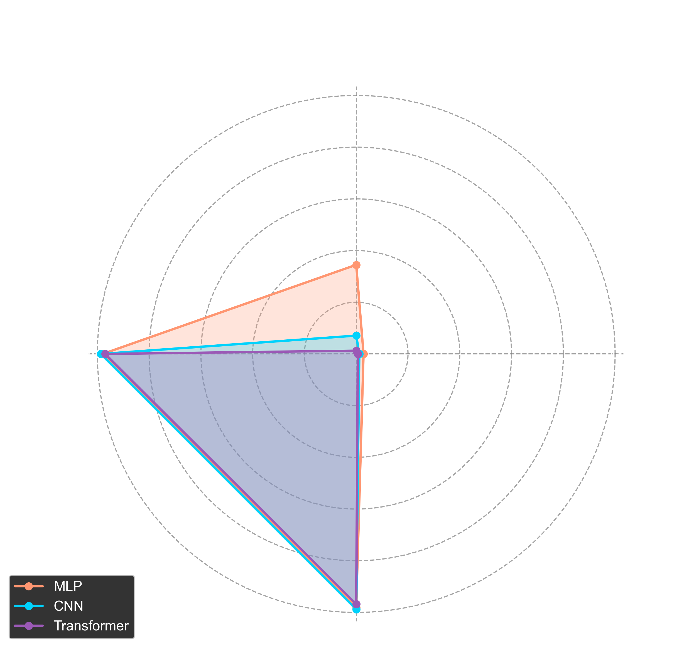

性能比较
以下是三种模型在MNIST数据集上的性能比较，包括测试准确率、训练时间和模型大小等指标。


性能指标对比表
| 指标 | MLP | CNN | Transformer |
|---|---|---|---|
| 测试准确率 (%) | 98.10 | 98.83 | 96.80 |
| 训练时间 (秒) | 35.37 | 83.70 | 164.68 |
| 模型大小 (MB) | 2.00 | 0.18 | 4.35 |
从性能比较可以看出：
- CNN模型在准确率上表现最佳(98.83%)，Transformer在这个简单任务上准确率相对较低(96.80%)
- MLP模型训练速度最快，Transformer训练时间最长
- CNN模型大小最小，Transformer模型大小最大
- 对于MNIST这样的简单任务，传统架构(CNN/MLP)比Transformer更有效